Instagramやリールで苦戦してきた方へ
AIに文章を作らせてThreadsで集客ができる！
2026年最新版
フォロワー100人以下の後発組でも月100万円を安定して売る仕組みを作る
Threads×AI
完全攻略セミナー
今だけ無料オンラインセミナーで公開します！
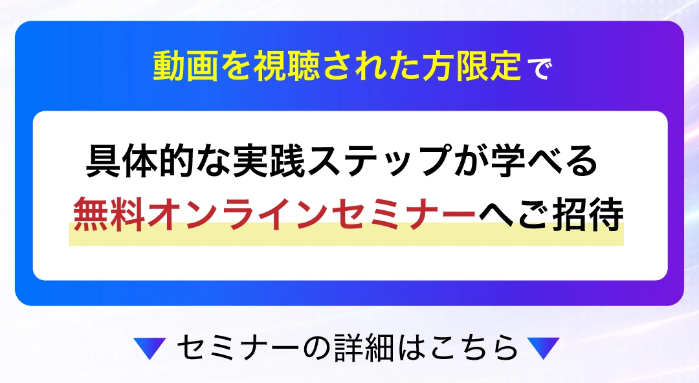
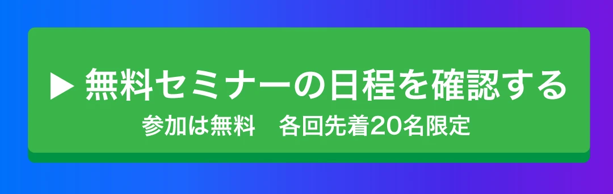
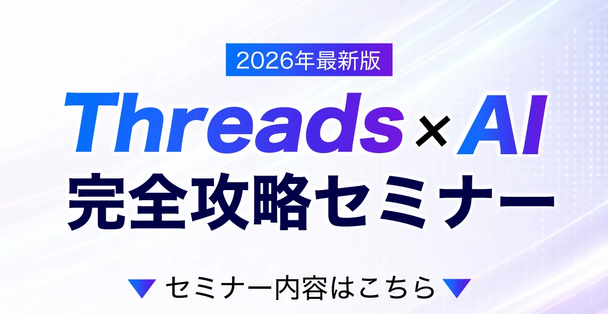
リール200本で成果が出なかった状態から、
Threadsで集客できるようになったロードマップ
Instagramリールを200本以上投稿しても、
フォロワーは700人ほど。
LINE登録も、週に1〜2件あれば良い状態でした。
そこから戦う場所をThreadsに変え、
投稿の型とAIへの指示を整えたことで、
6ヶ月でフォロワー5,000名、
LINE登録者1,400名を集客。
何を変えたのか。
どの順番で整えたのか。
どうやって集客につなげたのか。
なぜ今、
InstagramリールではなくThreadsなのか
リールは、
台本作成、撮影、編集、テロップ入れまで必要です。
真面目に作るほど、かなり時間がかかります。
一方でThreadsは、
文章で見込み客に届けられる媒体です。
しかも、AIに文章を作らせることで、
ネタ出しや構成作成の負担も減らせます。
リールに時間をかけても集客につながらなかった人
ほど、Threadsを取り入れる意味があります。
高単価商品や講座販売と
Threadsが相性の良い理由とは。
フォロワー100人以下でも
後発で勝てるThreads運用の考え方
Threadsで伸びない人ほど、
短文でバズを狙う。
いいね回りやフォロー回りに時間を使う。
伸びている人の表面だけを真似する。
そうなりがちです。
でも、それで増えるのは、
集客につながらない数字だけかもしれません。
大事なのはフォロワー数ではなく、
見込み客に届く投稿を作ることです。
後発でもThreadsで集客につなげるための考え方を
わかりやすく解説。
AIに丸投げしても反応が取れない理由
AIを使っているのに、なぜか反応が取れない。
この相談、かなり多いです。
原因は、AIが悪いわけではありません。
誰に向けて書くのか。
その人は何に悩んでいるのか。
どんな投稿の型にするのか。
最後にどんな行動をしてほしいのか。
この設計を入れずにAIに投げても、
出てくる文章は薄くなります。
AIに正しい設計図を渡して、
見込み客に届く文章を作る方法を公開。
Threads×AIを
“集客の入口”として使う実践ステップ
Threadsは、ただ投稿する場所ではありません。
AIに文章を作らせながら、
見込み客に届く投稿を作り、
集客や売上につながる流れまで整えることが大事です。
ただし、
自己流で投稿を増やすだけでは、
なかなか集客にはつながりません。
Threads×AIを使って集客の入口を作るために、
何をどの順番で整えるべきかを具体的に解説。
セミナー参加者限定
実践に使える4大特典もプレゼント
無料オンラインセミナーにご参加いただいた方には、
学んだ内容をすぐに実践できるように、
以下の4大特典もお渡しします。
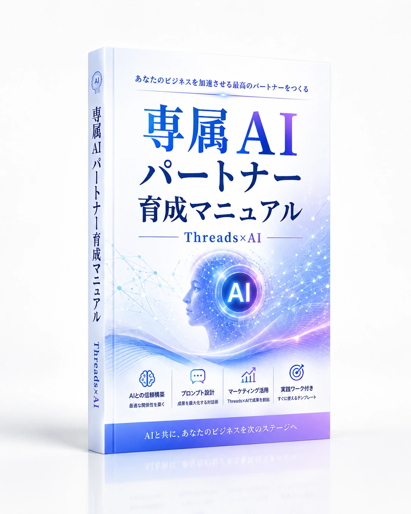
あなたのビジネスを理解し、
伴走できる専属AIを育てるためのマニュアル
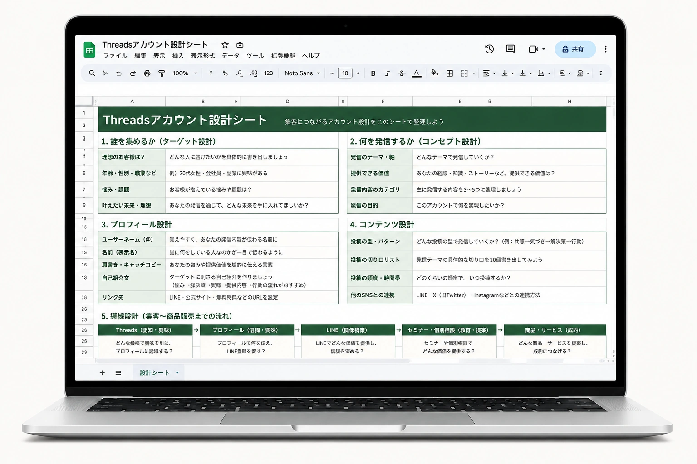
誰に何を届け、どの導線につなげるかを
整理できるThreadsアカウント設計シート
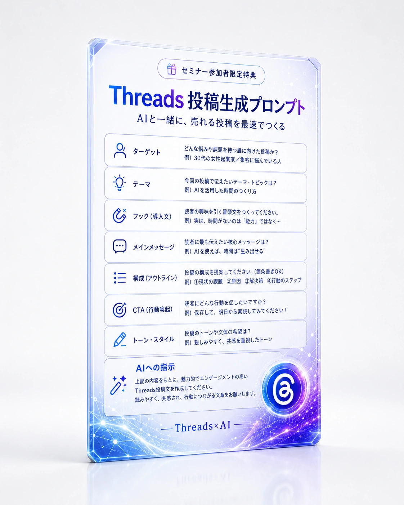
ターゲット・テーマ・フック・本文・CTAまで、
売れる投稿を組み立てるための生成プロンプト
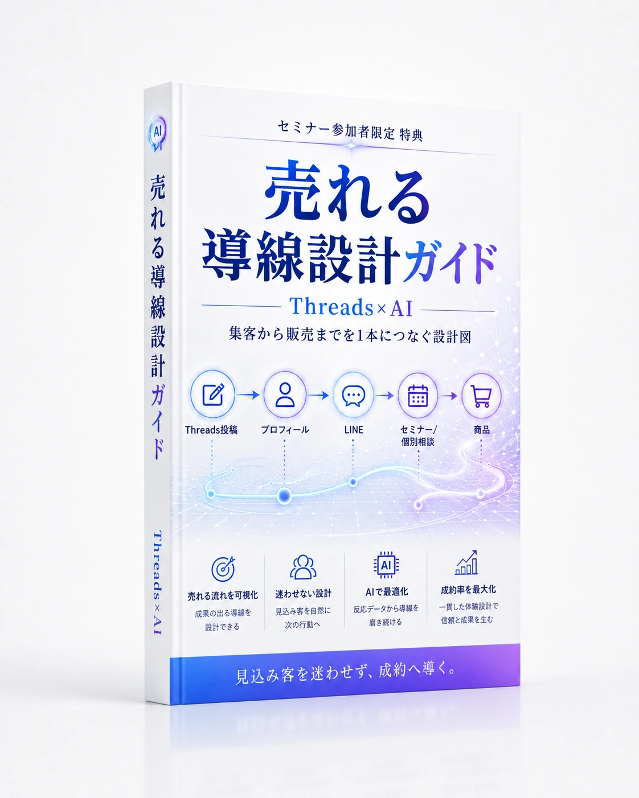
ThreadsからLINE登録、セミナー、商品販売までを
1本につなげるための導線設計ガイド
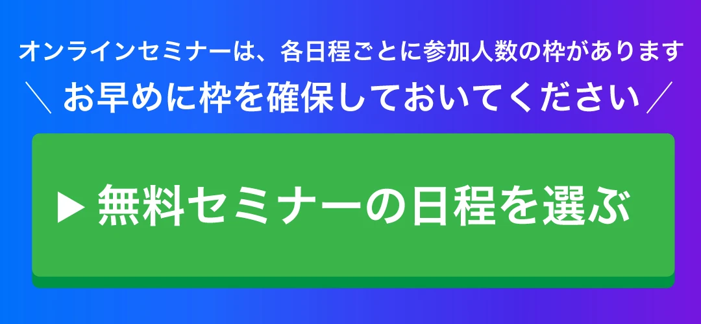
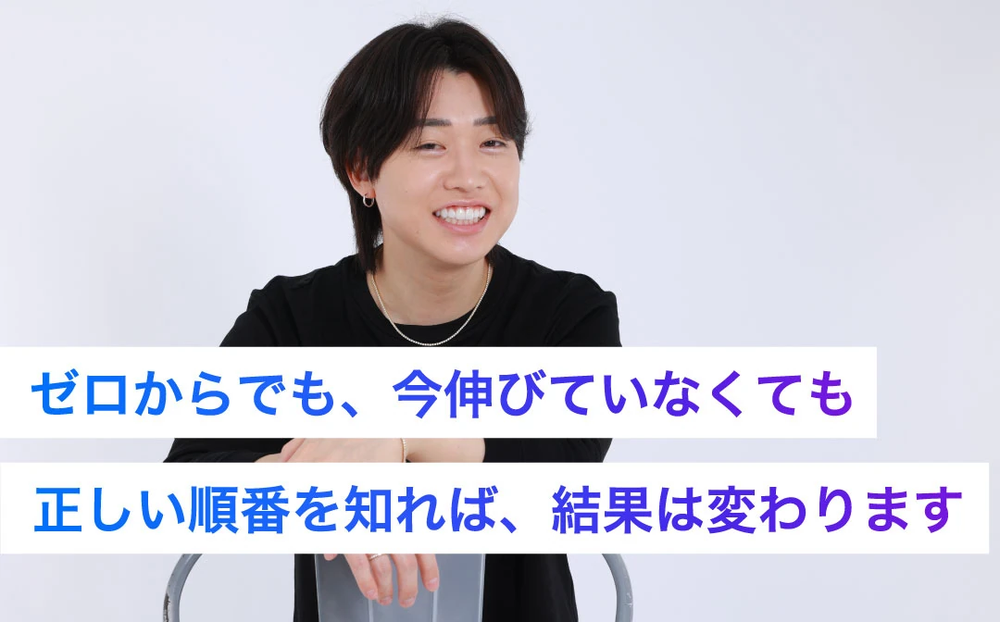
- Instagramを頑張っても伸びなかった。
- Threadsを自己流で投稿しても反応がなかった。
- AIを使っても、思うような文章にならなかった。
そんな状態からでも、
戦う場所を Threadsに変え、
投稿の型とAIへの指示を整えたことで、
結果は大きく変わっています。
そのほかにも、日々たくさんの成果報告をいただきます
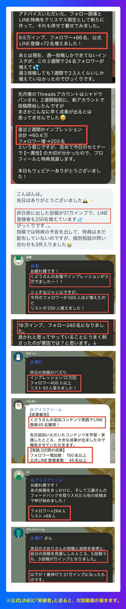
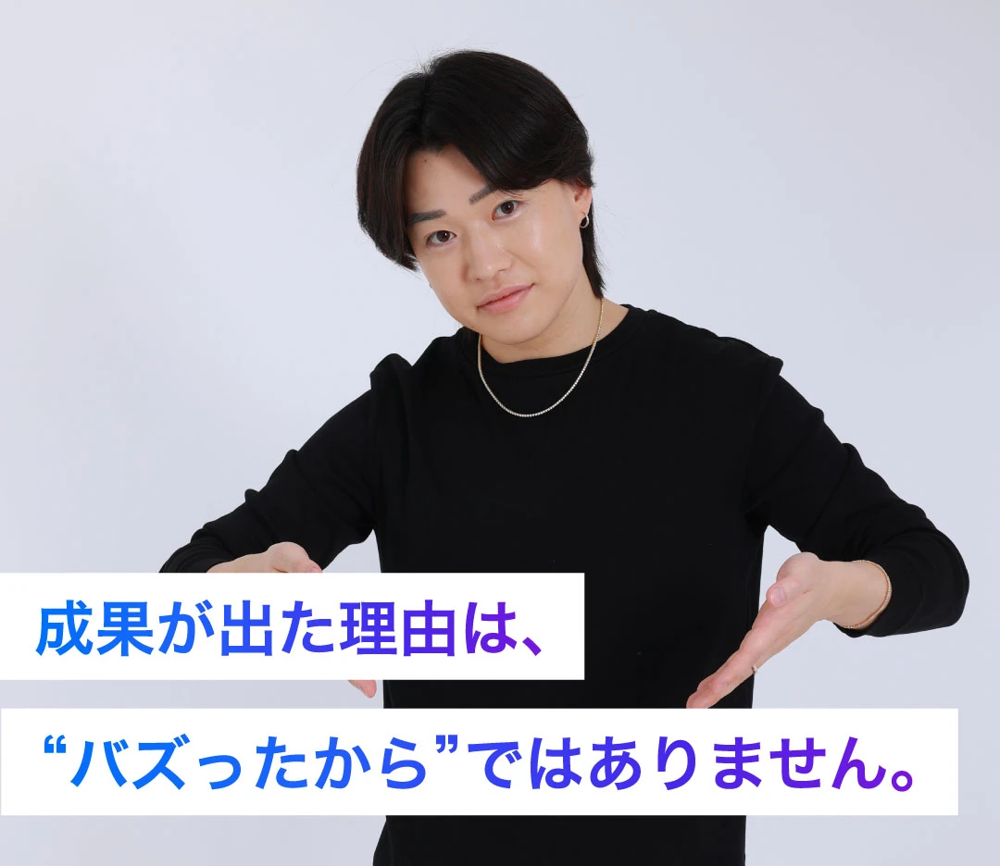
成果につながった方たちは、
ただ投稿を増やしたわけではありません。
整えたのは、
発信から集客、販売までの流れです。
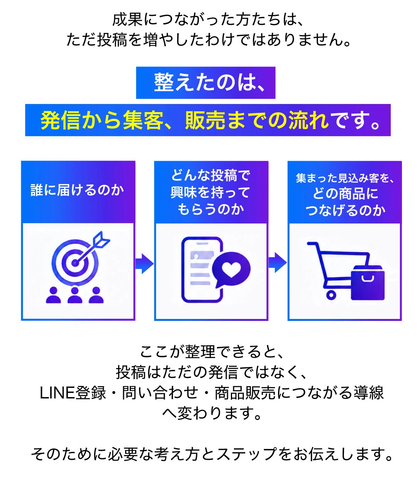
ここが整理できると、
投稿はただの発信ではなく、
LINE登録・問い合わせ・商品販売につながる導線
へ変わります。
そのために必要な考え方とステップをお伝えします。
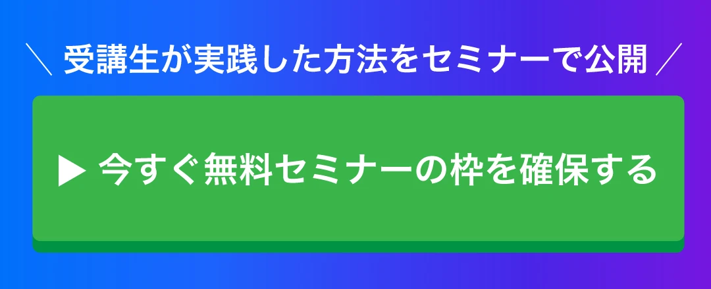
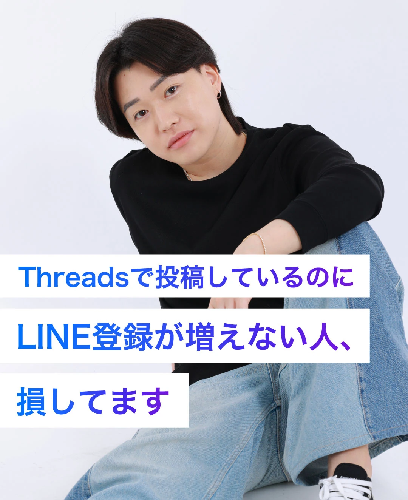
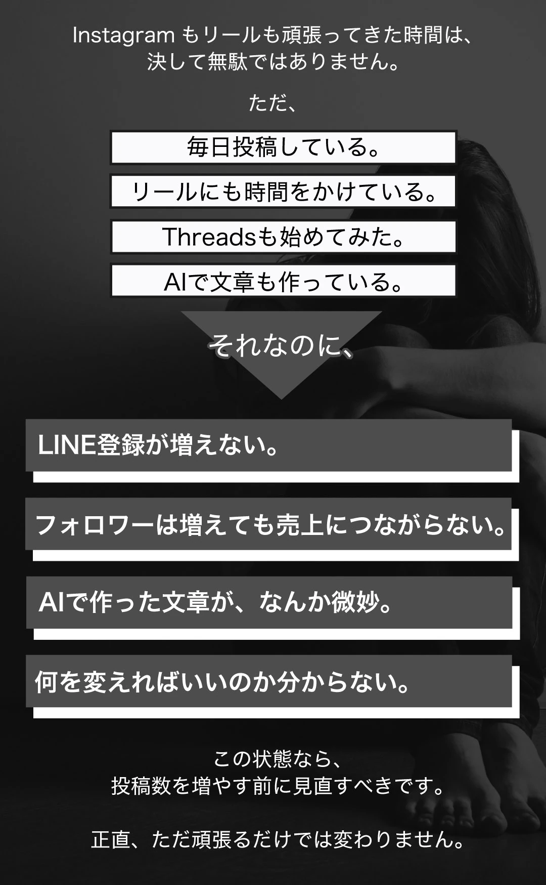
必要なのは、
フォロワーを増やすことではなく、
あなたの商品に興味がある人と出会うことです。
そして、その人が
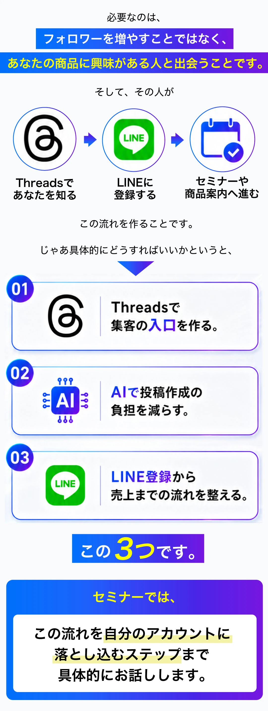
この流れを作ることです。
じゃあ具体的にどうすればいいかというと、
この 3つです。
セミナーでは、
この流れを自分のアカウントに
落とし込むステップまで
具体的にお話しします。
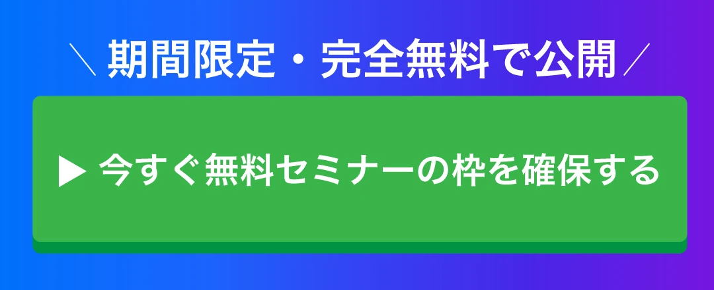
Threads×AIで集客を形にするために必要な流れを、今回の無料企画にまとめました
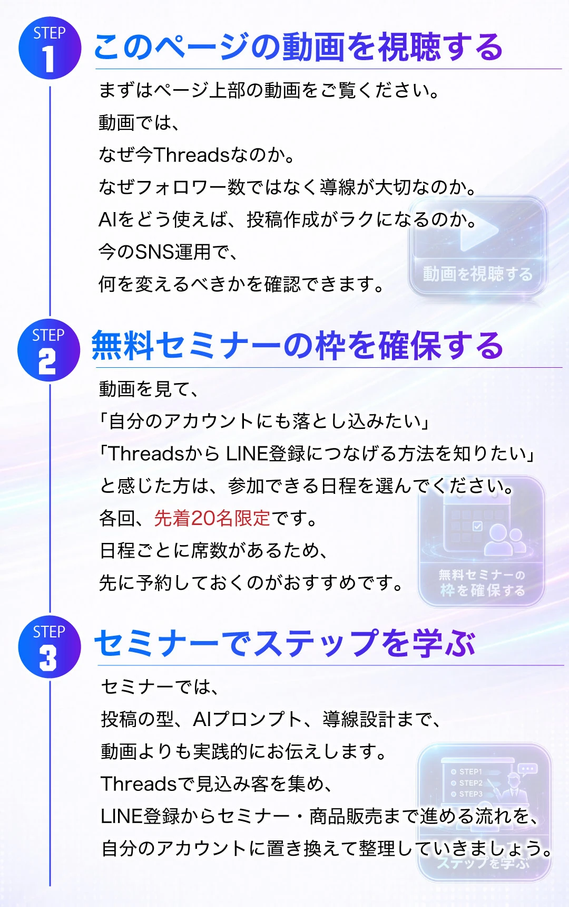
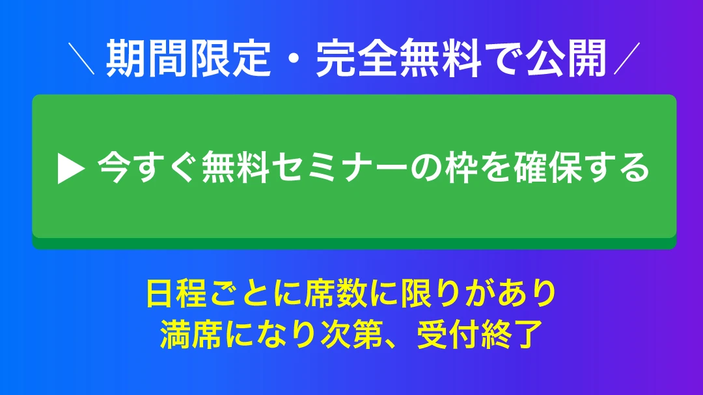
最後まで読んでくださったあなたへ
もし今、SNSで成果が出ず、
夜にスマホを見ながら、
「私にはセンスがないのかな」
「もっと頑張らないとダメなのかな」
「同業は結果を出しているのに、なんで私はまだここなんだろう」
そう感じているなら、
どうか自分を責めすぎないでください。
私自身も、
最初からうまくいったわけではありません。
アパレル時代には、
「お前には無理だ」と言われて悔し泣きしたこともあります。
独立してからも、
食費300円で毎日不安で眠れない時期がありました。
Instagramでリールを200本以上投稿しても、
フォロワーは700人ほど。
LINE登録も、週に1〜2件あれば良い状態。
それでも変われたのは、
才能があったからではありません。
努力する「場所」を変えたからです。
Threadsで見込み客に届く投稿を作り、
LINE登録から売上につながる流れを整えたことで、
SNSが少しずつ動き始めました。
これまでの努力は、
決して無駄ではありません。
ただ、その努力を
“必要な人に届く形”へ変えるだけです。
あなたの商品やサービスを必要としている人は、
まだ出会えていないだけかもしれません。
その人に届く形に、
今から整えていきましょう。
成果が出ると、SNSは一段と楽しくなります。
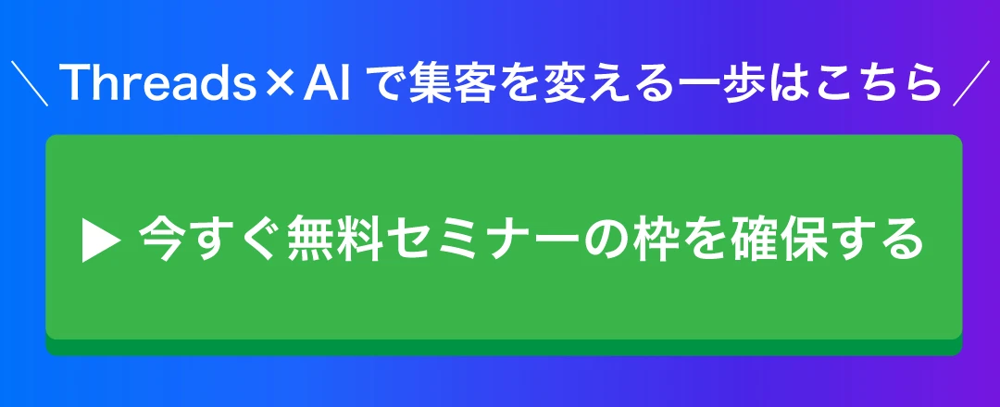